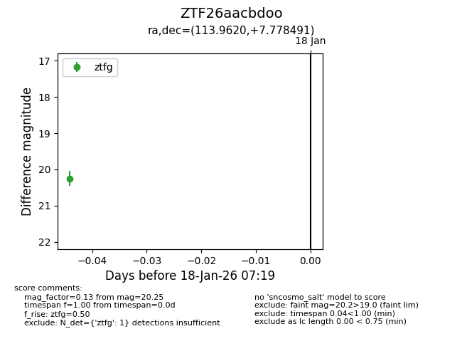
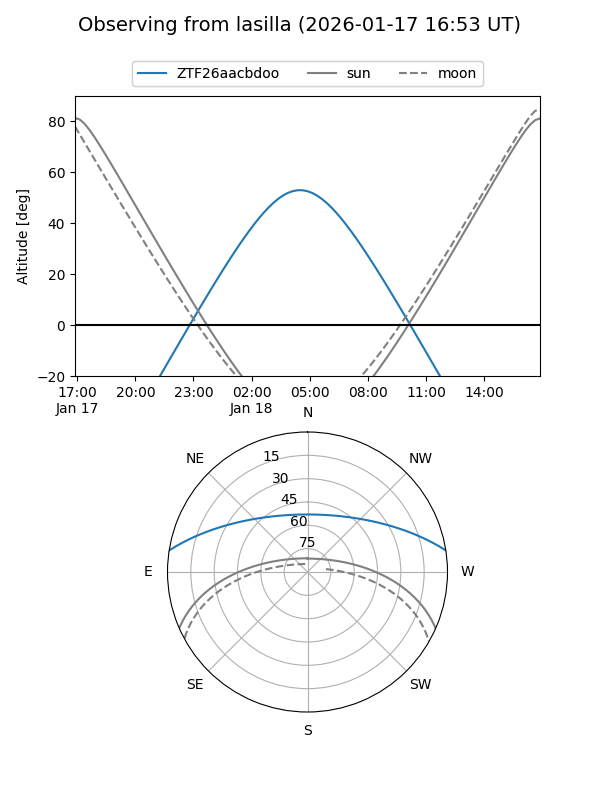

ZTF26aacbdoo
Target ZTF26aacbdoo at 2026-01-18 07:20
Aliases and brokers:
FINK: link
Lasair: link
ALeRCE: link
alt names
ZTF26aacbdoo (ztf,fink_ztf)
Coordinates:
equatorial (ra, dec) = 113.9620,+7.77849
equatorial (HMS+DMS) = 07:35:50.88,+07:46:42.57
galactic (l, b) = (210.9611,+13.38646)
Flags:
Photometry:
last ztfg=20.25
1 ztfg detections
Lightcurve

Visibility


Additional plots